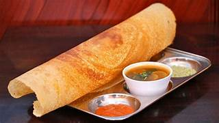
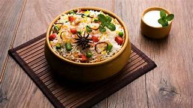
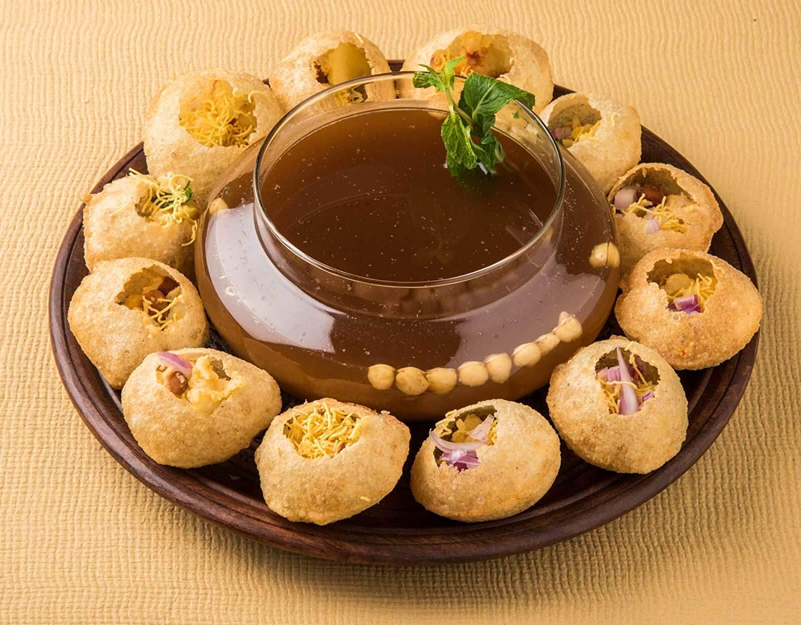
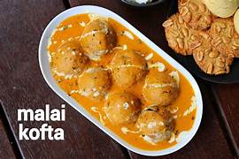
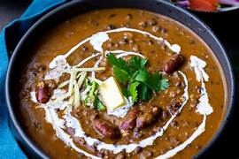
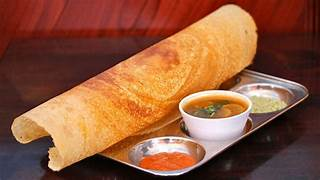
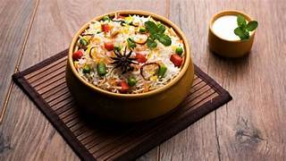
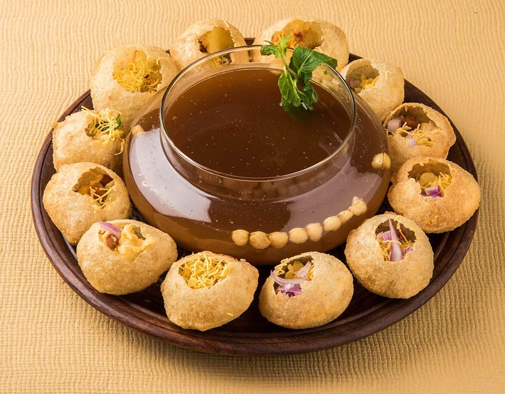
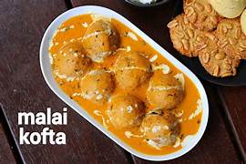
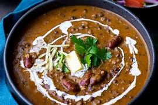

KHAMAN-DHOKLA
a fluffy, savory delight that melts in your mouth with every bite."Khaman-dhokla is a popular Indian snack hailing from Gujarat, known for its light, fluffy texture and savory flavor. Made from fermented chickpea flour (besan) and a blend of spices, it’s steamed to perfection, resulting in a soft, spongy cake with a slightly tangy taste. Typically garnished with mustard seeds, curry leaves, and coriander, and often accompanied by a sweet and spicy chutney, khaman-dhokla offers a delightful contrast of flavors and is enjoyed as a breakfast item, snack, or appetizer. Its vibrant yellow color and aromatic spices make it not only delicious but also visually appealing.
IDLI
soft, fluffy rice cakes that are a wholesome, savory delight with every bite.Idli is a beloved South Indian dish consisting of soft, fluffy rice cakes made from a fermented batter of rice and urad dal (black gram). These steamed cakes have a delicate, spongy texture and a mild, slightly tangy flavor due to the fermentation process. Traditionally served with coconut chutney and sambar (a spicy lentil soup), idlis are enjoyed as a nutritious breakfast or light meal. Their versatility allows them to be paired with a variety of accompaniments, making them a staple in Indian cuisine and a favorite for their simplicity and comforting taste.
KHANDVI
soft, fluffy rice cakes that are a wholesome, savory delight with every bite.Khandvi is a delectable Gujarati snack made from a spiced gram flour (besan) batter that’s steamed into thin layers, then rolled up into delicate, bite-sized rolls. The batter is seasoned with turmeric, ginger, and green chilies, giving it a vibrant yellow color and a balanced, mildly spicy flavor. Once steamed and cooled, the rolls are cut into pieces and garnished with a tempering of mustard seeds, curry leaves, and sesame seeds, adding a crunchy texture and a burst of additional flavor. Khandvi is appreciated for its light, melt-in-the-mouth quality and is often served as a snack or appetizer at parties and gatherings.
PALAK PANEER
creamy, spiced spinach sauce enveloping tender cubes of paneer in a comforting, flavorful dishPalak paneer is a popular North Indian dish featuring tender cubes of paneer (Indian cottage cheese) simmered in a rich, creamy spinach gravy. The spinach, or palak, is finely pureed and cooked with a blend of aromatic spices like cumin, coriander, and garam masala, creating a lush, vibrant green sauce that coats the paneer. This dish is known for its balanced flavors, combining the earthiness of spinach with the subtle richness of paneer. Often enjoyed with naan, roti, or rice, palak paneer is a nutritious and comforting meal that's both satisfying and delicious.
DOSA
crispy, golden crepes with a savory, slightly tangy flavor that pairs perfectly with a variety of chutneys and sambar.Dosa is a classic South Indian dish known for its crispy, thin crepes made from a fermented batter of rice and urad dal (black gram). The batter is spread thin on a hot griddle, resulting in a golden-brown, lacy texture that’s both crispy and slightly chewy. Traditionally served with an assortment of chutneys and sambar (a spicy lentil soup), dosa can be enjoyed plain or filled with a variety of savory fillings like spiced potatoes, onions, or paneer. Its versatility and satisfying crunch make it a popular choice for breakfast, lunch, or dinner, offering a delightful combination of textures and flavors.
BIRYANI
a fragrant, spiced rice dish layered with tender meat or vegetables and aromatic herbs, offering a feast for both the senses and the palate.Biryani is a richly flavored, aromatic rice dish that combines layers of long-grain basmati rice with marinated meat (such as chicken, lamb, or beef) or vegetables, and a blend of fragrant spices like saffron, cardamom, and cloves. The dish is traditionally slow-cooked, allowing the spices and flavors to meld beautifully with the rice. Garnished with fried onions, fresh herbs, and sometimes nuts or raisins, biryani offers a complex, satisfying taste experience with each mouthful. Often accompanied by cooling raita (yogurt sauce) or a side salad, biryani is a celebratory dish enjoyed across South Asia and beyond for its rich, sumptuous flavors and captivating aroma.
PANI PURI
crisp, hollow puris filled with spicy tamarind water, tangy chutneys, and a mix of savory fillings, creating a burst of flavor in every bite.Pani puri, a popular Indian street food, consists of crisp, hollow puris (tiny, round fried dough shells) filled with a tantalizing mix of spicy tamarind water, tangy chutneys, and savory ingredients like potatoes, chickpeas, and onions. The puris are traditionally served as an interactive experience where the diner dips each puri into the chilled, flavored water before popping it into their mouth in one bite. The result is an explosive combination of textures and flavors—crunchy, spicy, tangy, and refreshing—all harmoniously blended in a single, exhilarating bite. Often enjoyed as a snack or appetizer, pani puri is a beloved treat for its vibrant taste and dynamic presentation.
MALAI KOFTA
creamy, rich curry with tender, flavorful dumplings of paneer and vegetables in a luxurious, spiced sauce.Malai kofta is a sumptuous North Indian dish featuring soft, tender dumplings made from paneer (Indian cottage cheese) and vegetables, simmered in a rich, creamy gravy. The koftas are usually made by combining grated paneer with mashed potatoes and spices, then shaping them into balls and frying until golden. These dumplings are then gently nestled in a velvety sauce made from cream, tomatoes, and a blend of aromatic spices like cardamom, cinnamon, and garam masala. The result is a dish that is both indulgently rich and delicately spiced, often enjoyed with naan, roti, or rice. Malai kofta is celebrated for its luxurious texture and the harmonious balance of its creamy, flavorful sauce and tender dumplings.
DAL MAKHNI
a rich, creamy blend of black lentils and kidney beans simmered to perfection with spices and butter for a comforting, indulgent dish.Dal makhni is a beloved North Indian dish renowned for its rich, creamy texture and deep, savory flavor. It features a combination of black lentils (urad dal) and kidney beans (rajma) cooked slowly with a generous amount of butter and cream, which gives the dish its signature luxurious consistency. The lentils and beans are simmered with a blend of aromatic spices like cumin, coriander, and garam masala, along with tomatoes and onions, creating a hearty and flavorful curry. Often garnished with fresh cream and cilantro, dal makhni is traditionally enjoyed with naan, roti, or rice, making it a comforting and indulgent addition to any meal.